上海海洋大学前身是建于1912年的江苏省立水产学校，1952年成为国内第一所本科水产高校——上海水产学院，1985年更名为上海水产大学，2008年经教育部批准更名为上海海洋大学。学校原为农业部部属高校，2000年起由农业部划转地方，由中央和地方共建，以上海市管理为主。2010年上海市人民政府与国家海洋局签署协议共建上海海洋大学；2011年，上海市人民政府与国家农业部联合发文共建上海海洋大学。学校校训：勤朴忠实。
学校目前有浦东新区沪城环路校区、杨浦区军工路校区、杨浦区民星路校区3个校区，根据上海高校布局结构调整规划，学校于2008年整体搬迁至上海临港新城办学，主校区沪城环路校区占地约1600余亩，规划建设面积58.6万平方米。此外，在上海市浦东新区、浙江省象山县建有两个科研教学基地和洋山港海洋生态系统野外科学观测。
学校办学条件优良，教学实验室和专业实验室设施齐备。拥有国家远洋渔业工程技术研究中心、国家水产实验教学示范中心和上海海洋国家大学科技园；拥有教育部水产种质资源创新与利用重点实验室、大洋渔业资源可持续开发省部共建重点实验室等教育部重点实验室；拥有淡水水产种质资源与利用、水产品贮藏保鲜风险评估等农业部重点实验室；拥有国家水生动物病原库、团头鲂遗传育种中心、鱼类营养与环境生态研究中心、中国渔业发展战略研究中心、淡水水产品加工技术研发分中心、冷库及制冷设备质量监督检验检测中心、远洋渔业培训中心等农业部重点基地平台；学校拥有4个上海市工程技术研究中心、1个上海市高校重点实验室、1个上海高校工程技术研究中心和1个上海高校水产养殖E-研究院等；建有国际海洋研究中心、中美（SHOU－NOAA）海洋遥感及渔业信息研究中心、淡水鱼加工利用研究室等一批国家合作平台。
学校建有上海海洋大学海洋科学研究院，下设数字海洋研究所、海洋药物系统及神经科学研究所、海洋药物与健康食品研究所、海洋政策与法律研究所，海洋渔业遥感GIS技术实验室、海洋生态系统与环境实验室、中美海洋遥感及渔业信息研究中心、海洋经济研究中心、海洋文化研究中心等研究机构。建有农业研究院、公共管理研究所、中国鱼文化研究所、外国语言研究所及博物馆，拥有国内外闻名的鱼类研究室、标本室，同时学校在全国各地有50多个教学实践基地。拥有现代化的校园网络，并建有服务我国水产行业的中国水产网。学校图书馆现有纸质图书约120万册，电子图书约70万册，数据库30余个，图书突出学校的海洋、水产、食品特色。由学校承办的《水产学报》、主办的《上海海洋大学学报》被列为中文核心期刊、中国科技核心期刊和中国科技论文统计源期刊，《水产学报》获第一、二届“百种中国杰出学术期刊”称号。学校是上海市水产学会、上海市食品学会、上海市渔业经济研究会和上海市延安精神研究会挂靠单位。
学校教育体系完备，优势学科明显。拥有研究生教育、普通本专科教育、成人教育及留学生教育。拥有2个博士后科研流动站；3个一级学科博士学位授权点，21个二级学科博士学位授权点；10个一级学科硕士学位授权点，43个二级学科硕士学位授权点；2个研究生专业学位授权点涉及8个领域；46个本科专业及方向，10个高职专业。现有1个国家重点学科、1个上海市一流学科（A类）、2个上海市一流学科（B类），12个省、部重点学科，5个国家特色专业，3门国家精品课程，14门上海市精品课程，1个国家教学团队，2个上海市教学团队，15个上海市教育高地和1个上海市高校E研究院。
学校目前拥有普通本专科生13000余人，研究生近2500人。现有教职工1100余名，其中教学科研人员近800名，具有高级专业技术职务400余名，博士生、硕士生导师300余名。学校拥有双聘院士2名，中共中央、国务院载人深潜英雄、第一批“长江学者奖励计划”特聘教授1名，海外高层次人才引进计划（简称国家“千人计划”）1名、国家杰出青年科学基金获得者1名、百千万工程国家级人才3名、国务院学科评议组成员（第六届）3名、全国优秀教师1名、人事部有突出贡献中青年专家2名、国务院政府特贴人员10名、教育部新世纪人才2名、省级有突出贡献专家3名、上海千人计划3人、上海市优秀学科带头人7名、省市级教学名师3名、“百千万人才工程”（省级）2名、一级学会会长3名等，拥有上海市东方学者18名、上海曙光学者15名、上海浦江计划15名、上海科技启明星10名、阳光学者3名、晨光计划5名等为骨干的师资队伍。
“十一五”以来，学校科技成果达到国际领先和先进水平的有50余项，达到国内首创和先进水平的有90余项，获国家级科研项目或成果奖50多项，获省部级奖60多项。学校在水产养殖、海洋渔业、水产品加工、渔业经济管理、渔业法与海洋法、环境保护、物种保护、遗传育种、食品科学与安全、海洋生物资源开发与利用、农业经济与管理等领域做出重大贡献。
学校与美国、日本、俄罗斯、澳大利亚、韩国等国家和台湾、香港地区的大学以及多个国际组织有着密切的交流与合作，并与境外多所大学互派留学生，长期参与中美海洋生物资源合作计划，与联合国粮农组织、亚洲水产学会、国际水生生物资源管理中心等建立了长期友好合作关系。
学校校园文化丰富多彩，聘请了著名表演艺术家秦怡、闵惠芬，指挥家曹丁，作曲家陈钢等一批艺术家为我校艺术兼职教授；拥有大学生艺术团等各类文体、科技学生社团90余个；定期举办大学生科技文化艺术节，连续多年被中宣部、教育部、团中央、全国学联评为“大学生暑期社会实践先进单位”。
新时期的学校办学目标：到2020年，把学校建设成为一所海洋、水产、食品等学科优势明显，理、工、农、经、文、管、法等多学科协调发展，教学科研并重，国际化、开放型的一流的高水平特色大学。
虞丽娟，女，l963年10月生，博士，教授、博士生导师。中国共产党员。国际体育计算机学会理事、上海市创造学学会副会长。同济大学和上海体育学院兼职教授、博士生导师，上海市第十三届人大代表，中共上海市九届、十届市委党代会代表，上海市第十二届政协委员。
l998年l-5月赴美国哈佛大学肯尼迪政治学院自费进修，2003年11-12月教育部海外培训项目赴美国宾夕法尼亚大学专题进修。历任上海铁道大学党委副书记、同济大学党委副书记、上海体育学院党委书记。2010年6月起，任上海海洋大学党委书记。
主要从事物联网工程、海洋工程、体育工程、高等教育管理等方面研究。 主持完成国家、省部级纵向研究课题与横向科研项目近20项。其中主持完成科技部国家科技支撑计划1项、上海市科委重点攻关计划课题1项、上海市科委自然科学基金1项，上海市教委重点科研课题1项，上海市教委教育咨询课题 4 项；目前正在主持上海市科委重点攻关计划课题1项。曾获得国家科技进步二等奖、国家科技奥运攻关一等奖、上海市科技进步二等奖、上海市教学成果一等奖、中国体育科学学会科学技术进步奖二等奖、上海市科教系统思想政治教育研究成果一等奖、上海市科教系统党建研究成果一等奖、上海市高等教育学会研究成果一等奖。获得国家科技奥运先进个人等荣誉，出版专著2本，先后在国内外学术刊物发表论文50余篇。
现任上海海洋大学党委书记。主持党委工作。
1.老干部工作；2.党风廉政、干部队伍建设；3.党校。
分管单位与部门：校办公室。
男，汉族，上海市人，1961年12月生，教授，中国共产党党员。1983年上海水产学院养殖系淡水渔业专业本科毕业，2000年同等学历取得上海水产大学鱼类遗传与育种专业农学硕士学位。历任上海水产大学渔业学院副院长、党总支书记、院长。兼任中国海洋与湖沼学会理事，全国水产标准化技术委员会委员，中国水产学会淡水养殖专业委员会副主任，第三届上海市水产良种审定委员会委员。
主要研究方向为水产养殖动物的养殖及繁殖。
2000年3月起任上海水产大学党委副书记，纪委书记，工会主席。 现任上海海洋大学党委副书记，纪委书记，工会主席。
协助书记做好党委工作；协管人事工作与发展规划工作。
分管工作：1.组织工作；2.统战工作；3.工会、妇工委工作；4.计划生育工作；5.纪检、监察工作；6.机关管理工作；7.信访。
分管单位与部门：1.组织部；2.工会、妇工委；3.纪监审；4.机关党委。
男，汉族，江苏武进人，1952年8月生，教授，中国共产党党员。1977年8月、1986年7月先后毕业于上海交通大学机械制造与工艺设计专业、思想政治教育专业，1995年7月上海交通大学管理工程（国际商务）专业硕士进修班结业。历任上海交通大学机械制造教研室讲师、系团委书记、法华镇路校区办公室副主任、昂立实业集团副董事长、社科系德育教研室副主任、学生工作指导委员会(闵行校区)副主任、党委宣传部副部长、部长，上海市教育委员会德育处（学生处）处长、上海市高校毕业生就业办公室常务副主任、上海市教育委员会人事处（师资处）处长等职。
主持编写了高校马列、思政、哲学等七套统编教材。主要论著有：《研究生价值观的研究》、《上海学校德育概论》、《上海市学校心理健康教育》、《步入大学》、《迈向成功》，发表论文20余篇。
2003年4月起任上海水产大学党委副书记，2004年5月起，兼任上海水产大学副校长。
现任上海海洋大学党委副书记、副校长
协助书记做好党委工作；协助校长做好行政工作。分管工作：1.宣传工作；2.精神文明建设；3.学生工作；4.就业工作；5.人武工作；6.团委、学生会； 7.思想政治理论课建设；8.校园网信息安全；9.保密工作。
分管单位与部门：1.宣传部；2.学生处；3.团委；4.社科部。
男，汉族，江苏人，1951年5月生，硕士研究生，教授，博士生导师，中国共产党党员。1982年7月安徽皖北农学院农学系本科毕业，1986年9月南京农业大学生化系微生物专业硕士毕业。历任上海市农科院食用菌研究所所长，上海市农科院副院长，院长兼党委副书记，中共上海市郊区工作委员会委员、上海市农业委员会副主任；上海市第九、十、十一届政协委员，第五、六届科协副主席，农业部第五、六、七届科学技术委员会委员，中国农学会副会长，中国食品学会副理事长、中国菌物学会副理事长，上海水产学会理事长、上海园艺学会理事长，上海农学会副理事长，上海市生物工程学会副理事长，农业部食用菌遗传育种重点实验室主任，上海市农业遗传重点实验室主任。
先后主持863重大专项、科技部、上海市重点科技攻关等19项国家攻关、国家自然科学基金和重大科研项目，发表论文近百篇。在国际上首次提出并建立了以单核和同核原生质体为材料的食用菌杂交育种新方法和育种技术程序；在国际上首次发现ssRNA香菇病毒颗粒，并提出了香菇病毒病的预防与控制方法。先后获12项国家、农业部和上海市科技进步奖。
2004年5月起任上海水产大学校长。 现任上海海洋大学校长。
主持行政工作。1.学科建设；2.人事工作（师资队伍建设、劳动工资）；3.外事工作（港澳台工作）；4.财务工作；5.审计工作；6. 退休工作；7.校友工作。
分管单位与部门：1.人事处；2. 外事处；3.发展规划处；4. 财务与资产管理办公室。
黄硕琳，教授，1954年9月生，福建省南安县人。1984年12 月加入中国共产党。1988年7月研究生毕业于英国伦敦大学政治经济学院海洋开发的法律、经济和政策制订专业。1988年11月至1992年9月为上海水产大学渔业工程系讲师；1992年10月至1995年5月为上海水产大学渔业工程系副教授；1995年5月至1996年12月任上海水产大学工程技术学院院长，副教授；1997年1月至2000年3月任上海水产大学科研处处长，教授，博士生导师；2000年3月至今任上海水产大学副校长,上海海洋大学副校长，教授，博士生导师。
1994年9月至1995年4月，受国家教委派遣，作为高级访问学者，在英国剑桥大学国际法研究中心进修和研究国际海洋法和国际渔业法。1998年10月至1999年3月受日本名古屋大学邀请，作为客座研究员在日本名古屋大学国际开发研究科从事海洋生物资源开发和保护的国际法律制度的研究和讲学。多次作为我国政府代表团的成员参加双边和多边渔业谈判。多次参加国际学术会议并在会上发表有关海洋法和渔业管理的论文。
现兼任中国水产学会副理事长；中国海洋法学会副会长；上海海洋湖沼学会副理事长；上海渔业经济研究会会长；亚洲水产学会理事；太平洋区域经济研究会副会长；《水产学报》主编；《上海海洋大学学报》副主编；杨浦区科协副主席。
主讲课程有：海洋法与渔业法规；国际渔业法；渔业政策与管理等。作为第二完成人参加的“海洋渔业专业的教学改革与实践”1997年获上海市教学成果一等奖，同年获国家级教学成果一等奖。多年来共出版著作、发表论文60多篇册。
1990年被共青团上海市委员会授予“上海市新长征突击手”称号；1991年被上海市高等教育局授予“上海高校优秀青年教师”称号；1993年起享受国务院颁发的政府特殊津贴；1997年被中共上海市教育卫生工作委员会评为上海市教卫系统“优秀共产党员”；1997年经农业部批准授予“中青年有突出贡献专家”荣誉称号；1997年被中共上海市委组织部、上海市人事局、上海市教育委员会、上海市科学技术委员会、上海市人民政府侨务办公室联合授予“上海市回国留学人员先进个人”荣誉称号。
协助校长做好行政工作；协管学科建设。分管工作：1.科研工作；2.研究生工作；3.科研合作与科技开发；4.学术活动与交流；5.重点实验室与专业实验室管理。
分管单位与部门：1.科技处；2.研究生部；3.学报编辑部。
男，汉族，上海市人，1964年7月生，副研究员，中国共产党党员。1986年7月中国人民大学中共党史专业本科毕业，2003年1月同等学历取得复旦大学马克思主义理论与思想政治教育专业法学硕士学位。历任上海水产大学社科部主任助理，社科部副主任，党委工作办公室副主任兼宣传部副部长，党委宣传部部长，学生工作部（处）部（处）长，食品学院党总支书记，校长助理兼校办主任。
在多年的教学和高校思想政治工作中，在高校“两课”教育、学生工作、党的建设等方面发表文章十余篇。
2003年4月起任上海水产大学党委副书记，2004年5月起，兼任上海水产大学副校长。
2004年5月起任上海水产大学副校长。 现任上海海洋大学副校长
协助校长做好行政工作；协管财务工作。分管工作：1.后勤工作；2.校办产业；3.基建工作；4.国有资产管理；5.校园网建设与管理；6.安全保卫工作；7.军工路校区综合管理。
分管单位与部门：1.保卫处；2.基建处；3.后勤管理处；4.资产经营有限公司；5.实验与设备管理处；6.现代信息与教育技术中心；7.新校区建设办公室。
男，汉族，江苏滨海人，1961年12月生，博士研究生，教授，中国民主建国会会员、第九届民建中央委员，第十二、十三届上海市人大常委会委员。1984年上海水产学院加工系制冷专业本科毕业，1994年3月日本东京水产大学食品工学硕士研究生毕业，1997年3月日本东京水产大学食品工学博士研究生毕业。历任中国水产科学研究院渔业机械仪器研究所助理工程师，日本东京水产大学食品生产学科食品工学研究室外籍研究员，日本东京PBI Japan株式会社食品技术担当，上海水产大学食品学院教师、院长，上海水产大学科研处处长等职。中国食品科学技术学会理事，日本食品体系学会海外会员。
主要研究方向为食品传热工学、食品体系分析。著有《食品软包装材料与技术》等，近年来发表学术论文20余篇。
2004年5月起任上海水产大学副校长。现任上海海洋大学副校长
协助校长做好行政工作；协管外事工作。分管工作：1.本专科教学；2.成人教育；3.招生工作；4.留学生工作；5.合作办学；6.体育工作；7.教学实验室管理；8.图书情报。
分管单位与部门：1.教务处；2.成人教育学院；3.高职学院；4.图书馆。